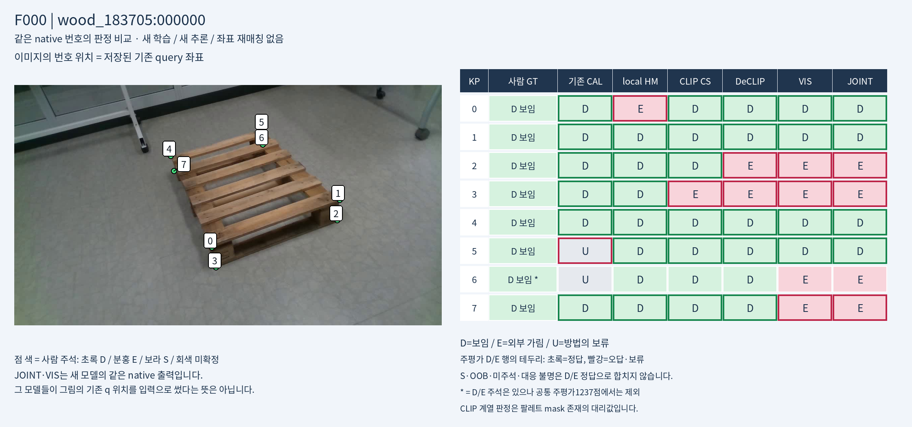
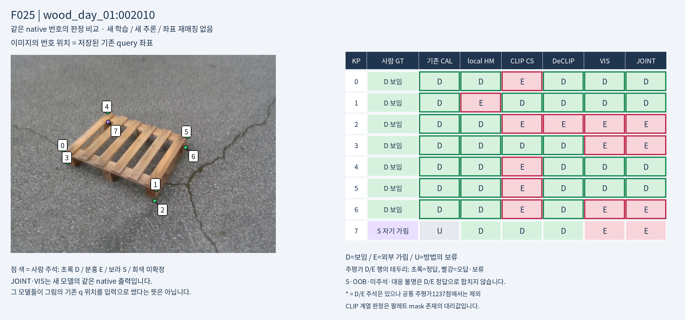
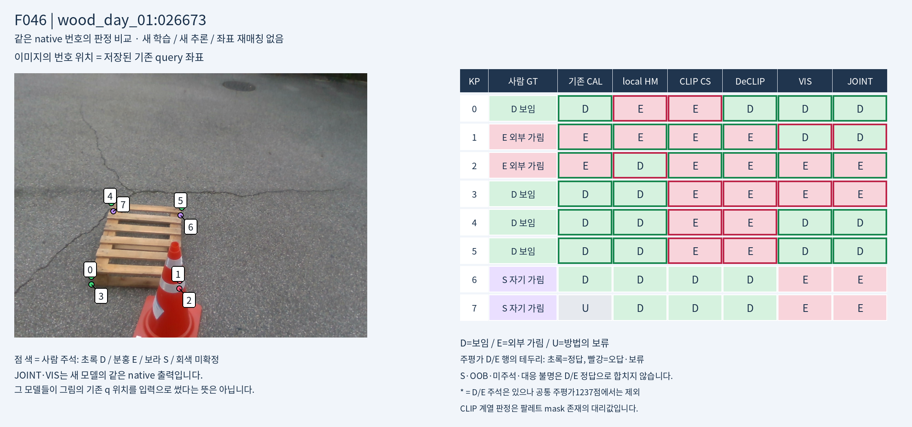
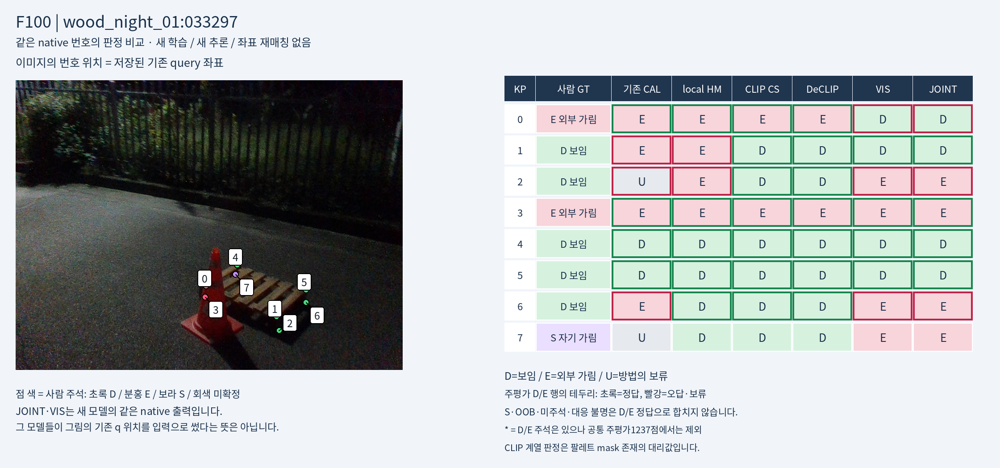
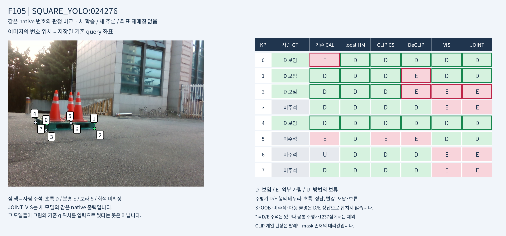
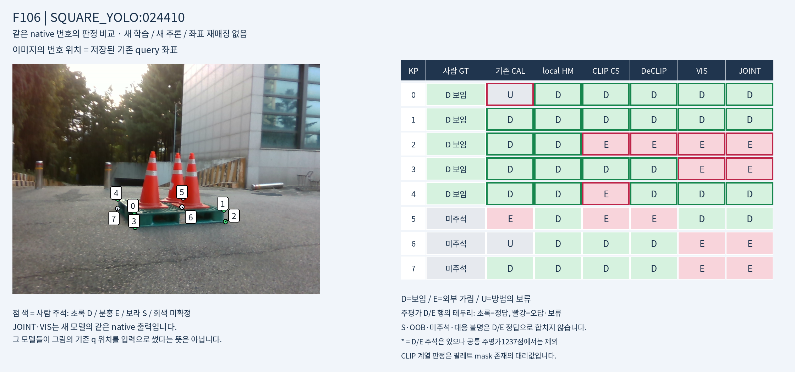
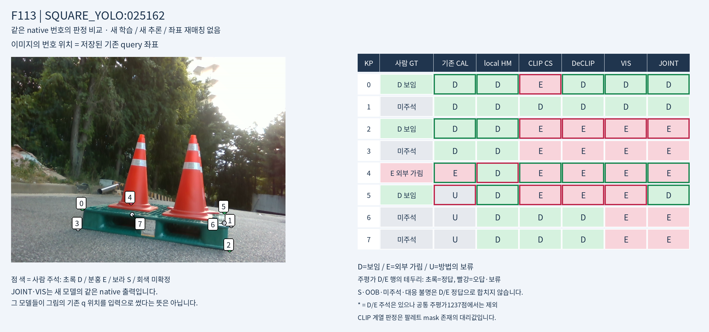
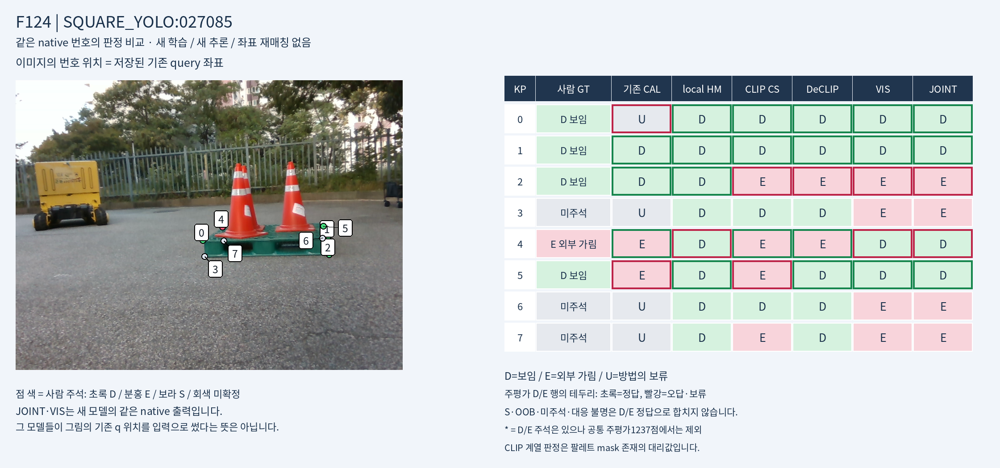
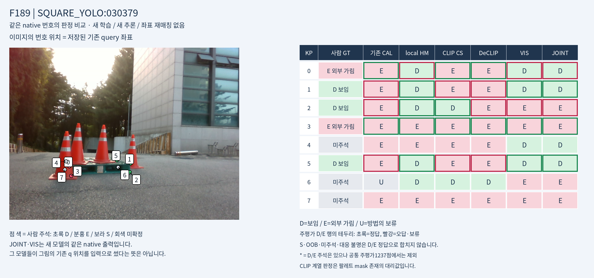
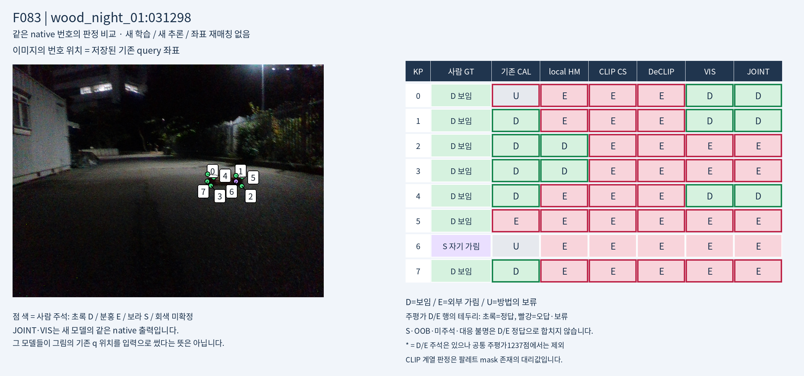

F000 — wood_183705:000000

저장된223장×8점, 총1784행. 주평가1237점(D1147/E90)의 혼동행렬과 precision/recall을 같은 대상에서 계산했습니다. S/밖/미주석/대응 불명은 별도 보존했습니다. v61은 존재/부재의 semantic 전이 proxy입니다. 기존 CAL은 실사 CAL 학습 이력이 있는 기준이며 새 SYN 실험과 학습 조건이 다릅니다.
그림의 점 위치는 모두 기존 q입니다. JOINT·VIS_ONLY는 같은 native 번호의 새 full-image 모델 판정이며, 그 q를 입력으로 쓰거나 그 위치의 mask를 읽은 값이 아닙니다. CLIP은 target-mask 존재의 대리 판정입니다. 따라서 동일한 픽셀을 모든 모델이 판단했다는 비교가 아닙니다.
JOINT의 slot2/3/6/7 전부 E 패턴과 CLIP의 이미지별 mask/query 실패를 구분해 보세요. 재평가·시각화로 checkpoint나 임계값을 선택하지 않았습니다.
전체1784점 검색표 · 행별 CSV · 전체/재질/native별 지표 CSV · 모든 주석 상태 분포
| 方法 | D recall | E recall | E precision | 保留U | D→D/E/U | E→D/E/U |
|---|---|---|---|---|---|---|
| CAL_LEGACY | 57.11% | 92.22% | 20.65% | 14.31% | 655/319/173 | 3/83/4 |
| V61_PRESENCE_PROXY | 22.67% | 97.78% | 9.03% | 0.00% | 260/887/0 | 2/88/0 |
| HEATMAP_LOCAL | 89.63% | 25.56% | 16.20% | 0.00% | 1028/119/0 | 67/23/0 |
| FULL_CLIP | 36.09% | 90.00% | 9.95% | 0.00% | 414/733/0 | 9/81/0 |
| FULL_CLIP_SURGERY_ARCH | 51.87% | 93.33% | 13.21% | 0.00% | 595/552/0 | 6/84/0 |
| EVA_STANDARD | 39.76% | 98.89% | 11.41% | 0.00% | 456/691/0 | 1/89/0 |
| EVA_CSA | 51.79% | 98.89% | 13.86% | 0.00% | 594/553/0 | 1/89/0 |
| EVA_DECLIP | 57.11% | 98.89% | 15.32% | 0.00% | 655/492/0 | 1/89/0 |
| VIS_ONLY | 55.45% | 43.33% | 7.09% | 0.00% | 636/511/0 | 51/39/0 |
| JOINT | 58.94% | 34.44% | 6.18% | 0.00% | 676/471/0 | 59/31/0 |









